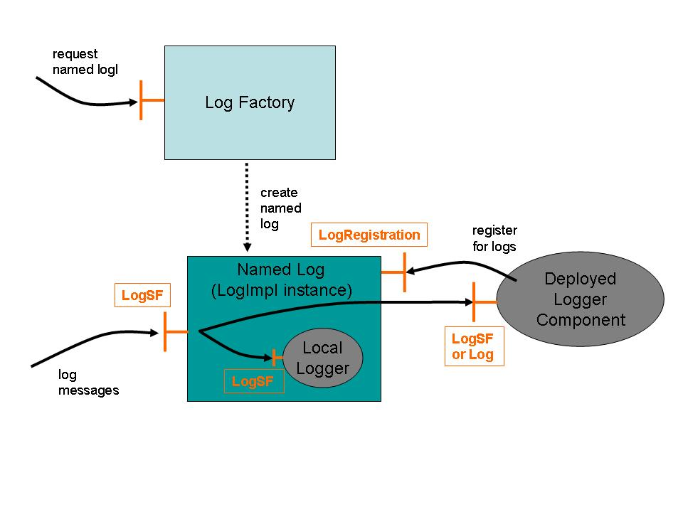

Logging within SmartFrog Components
Logging within
SmartFrog Components
version 1.0
20th May, 2005
Table Of Contents
Introduction
SmartFrog is about creating distributed configuration based systems, created by describing the system as a distributed set of components deployed and managed by providing descriptions of the components, their configuration and their location.
Given this, a key aspect of developing and running such systems is the ability to generate, collate and inspect log files generated over the distributed environment. For this to be possible it is important to provide a simple, but powerful means for component writers to interact in a standardized way with the logging system. In this way it becomes both pervasive and consistent.
To this end, SmartFrog has a logging system as part of its fundamental core which can be extended in interesting ways, but which provides the component writer with that consistent interface common for all components and the core of SmartFrog itself.
This infrastructure is not yet fully realized, but will be over the coming period. However the component-writers view, the API, will not change over this time – merely the sophistication of the distributed collection and analysis available as part of the standard distribution.
The entire model is based on that provided by the de-facto Java standard for logging Log4J [1] and integrates with it so as to enable SmartFrog users to use the tools that come with that environment.
Note that in this documentation, there are many classes and interfaces that are described. These are, unless specified otherwise, in the package “org.smartfrog.sfcore.logging”. All of these classes are fully documented in the Javadoc documentation, and this should be the ultimate reference material. This document is intended only to provide an outline of how it works and how to use it.
Basic Model
A SmartFrog daemon will in general have a number of components, belonging to different applications, and perhaps each needing to be logged in a different way – perhaps to a different level of detail or collated and distributed to different places. Consequently SmartFrog must provide for a number of “logs” - managers and distributors of logging information - so that each component or set of components can deliver their logging information in a way that can be handled differently. Each such log has a unique name in that daemon, and all logging is done to a log. The programmer's API to a log is defined in the interface “LogSF”.
To create and manage these named logs, SmartFrog provides a factory to create new ones on demand, or to link to an existing one. The implementation class for this is “LogFactory”, and all methods on it are static.
Each log comes with the capability to direct log messages to a number of different destinations – loggers. There is a single default logging destination known as the local logger (not a component for technical reasons), but users can add (through deployment) logger components as desired to direct specific log messages in various ways: to files, databases, remotely to other remote logger components, and so on. (That said, the ability to have logger components is not yet implemented!)
Within a component, the writer can define the named log to use, and then all logging methods will be directed to that log, including those that come from the PrimImpl code that all components inherit. In most cases, the default log picked by a component is the right one to use, so the component writer need do nothing but add the logging calls to that log in the component's code.
Fig 1Daemon's Logging Infrastructure
The set of components defined in fig.1 are now defined in more detail.
Log Factory
The log factory is a class which creates and manages logs (instances of the class LogImpl). A log is created with a name and two requests for the same name returns the same log. Currently, once created, a log cannot be destroyed. The methods (all static) offered by the LogFactory is defined in the Javadoc for the class, and are described in the section on the programmer's model.
LogSF, Log and LogMessage
The primary interface to the logging system is the LogSF interface. This is defined as a pure extension of the two sub-interfaces Log and LogMessage.
These two interfaces define the following:
-
Log: the primary logging methods, the definition of logging levels, and so on
-
LogMessage: methods to write to the standard output and standard error streams.
The full details can be obtained from the Javadoc, and they are described further in the section on the programmer's model.
LogImpl
A log is an instance of the class LogImpl which receives the log messages and dispatches them to the local logger and any of the logger components that have registered with it. A log implements the interface LogSF for use by component writers. It also implements the LogRegistration interface to enable logger components to register for logs. This aspect is not yet fully implemented, but will be in later releases. The detail of the interfaces are given in the Javadoc for the interface, but is also described in some detail in that programmer's model.
Local Loggers
Logging needs to be enabled before any of the rest of SmartFrog is initialized, let alone before any components have been deployed. Consequently the core logging infrastructure cannot be built from components, but must be built from class libraries. To this end, the concept of a local logger is provided, which is an instance of a class that handles log messages by, for example, writing them to the standard output of the daemon. All logs use an instance of the same local logger class, defined at the time of SmartFrog initialization, and the log-specific instance of the local logger is created by the log at the time of its own creation.
A number of local logger classes are provided as configuration options, but alternatives could also be provided by end users:
“Log to streams” logger, which writes the log messages to the standard out or standard error of the process (and hence to the console window, for example). If no further configuration is done, this is the default setting provided by SmartFrog “out-of-the-box”.
“Log to file” logger which writes log messages to the specified file.
“Log to nothing” logger which simply ignores all the log messages.
“Log to a Log4J” logger provided as part of the Log4J extensions (see below), though this is still somewhat primitive as a capability and will be extended in future releases.
Logger Components
Logger components are not yet provided, and the use of them is not yet fully supported. However the intention is that users will be able to configure the system with a range of deployed components that register for log messages from specific logs, with specific levels of detail, and deal with the received messages as desired.
So for example, it would be possible to deploy alongside a specific application a logger that requests all the debug or trace log messages generated by that application, but none of the others. This feature could be useful during application development and testing.
However, until this is enabled in a later release, the only loggers provided are the single-class local loggers provided with every log.
Log Levels
Log messages generated by the core system are generated at one of a number of different levels of importance and detail. These follow the levels defined in the Log4J interface, with the addition of an “ignore” level which is treated in just about every way as trace level, and is mapped to this for propagation to loggers.
-
Ignore: generated along with trace information, tagged with the instruction to “ignore” the log message. It is primarily used for logging the occurrence of internal expected exceptions that are part of normal operation. It saves on support requests!
-
Trace: used to provide the finest detail of system operation, it can generate a very large amount of data so use with care.
-
Debug: intended to provide the level required to identify faults, but without the very fine detail of Trace level.
-
Info: provides some level of useful information on normal operation, such as deployment, but without the finer levels required to follow the inner workings of the system. This is the normal level at which the system operates.
-
Warn: more serious warnings about the state of the system, indicating some possible exceptional situation.
-
Error: error conditions, including deployment failures, are logged at this level.
-
Fatal: conditions that affect the stability of the application.
In addition to the system itself logging at these various levels, components may do the same, with an appropriate semantic interpretation.
Loggers are defined to work at different levels of detail, and the messages are passed to them according to the level set during their registration. In this way different levels of detail can be obtained from the different logs. If a logger requests logs of a specified level of detail, it will also receive those associated with a lower level of detail. Thus registering for info level implies that the logger will also receive warn, error and fatal log messages.
A common model of operation will be to have the local logger carry out background logging at, say, info level. Whilst debugging, developers could log applications at a finer level of detail such as debug by deploying additional logger components. As soon as the debugging process is complete, the logger components could be terminated to leave the application logging at the lower level of detail. If a problem occurs, the debug-level components can be redeployed and the system will generate the detailed log information once again.
Note that there are methods to determine the maximum log level currently required for a log to avoid generating expensive log messages which will simply be discarded. The “current” level may vary in time as logger components register and unregister from the various logs.
Standard Output and Standard Error
In addition to the primary log messages, there is also a mechanism to output messages intended for the standard output or standard error of the SmartFrog daemon. These are not at a specific level, but are typically messages that one would write to the Java “System.out” and System.err” streams. For example, the messages that appear on the SmartFrog console at startup are messages of this kind. A mechanism has been provided to handle these in a more flexible way.
The LogSF interface is defined as the combination of two sub-interfaces:
-
Log which implements the primary logging methods, levels and so on
-
LogMessage which implements the methods to write to the standard output and standard error streams. These methods are called “out” and “err” and have a number of overloaded variations. (See the Javadoc for the full description).
Each log implements the full LogSF interface, and this is made available to component writers. However loggers may implement either the complete interface or only the more restricted Log interface (i.e. without the out and err methods).
The log will forward calls to its out and err methods in one of two ways:
-
if the logger implements the full LogSF interface, it forwards the calls to the logger's out and err methods,
-
if the logger implements only the more restricted Log interface, it wraps the out and err messages as info-level log messages and then passes these to the logger.
All the local loggers provided as part of the distribution have the full LogSF interface, and they all output the message to the “System.out” and “System.err” streams. Some of them also internally wrap them as info-level messages for any other handling that is required (i.e. writing to file or passing to the Log4J infrastructure).
Programmer's Model
The overall model provided to component programmers involves a number of simple steps:
-
obtain the appropriate log
-
setting the correct log level
-
submit messages to the log at the appropriate levels
-
possibly send messages to the out and err streams
These are considered in turn:
Obtaining the component log
This step can be done in many different ways, but a standard model has been provided which should be sufficient in most cases.
A method is provided in PrimImpl (which all components extend) which returns the correct log in most cases.
LogSF sfLog();
This method does the following.
-
If a log has been set by the method setLog(...), this is returned.
-
If this has not been called explicitly, then the sfLog method generates a name on first use by doing one of the following:
-
It examines the context of the component to see the attribute “sfLog” has been set, and if so returns the log whose name is given as the value of that attribute.
-
If this does not exist, it tries to identify the log of the parent component.
-
If there is no parent component (ie it is the root component) the name of that component is used as returned by “sfCompleteName()”.
-
If there is any difficulty in obtaining this, the daemon's core log (ie that for the process compound) is used, guaranteeing that logs can always be generated.
-
In this way, unless specifically overridden by case 1 or 2.1, and assuming that there are no difficulties, every component in a component hierarchy will use the log with the same name as the root component. Note that this may not actually be the same instance of a log as the components may be in different daemons.
However if some other mechanism is to be used to generate a log, the log factory must be used directly, and then set as the log by using the setLog(...) method.
The interface to the log factory includes the following method to access a named log:
/**
* get a named log.
* @param name
* @return a log from cache or new.
*
*/
public static synchronized LogSF getLog(String name);
This method can be called from inside the body of a component, then registered as the component log, as in:
LogSF myLog = LogFactory.getLog(“foo”);
setLog(myLog);
It is normal to use the sfLog() method to obtain the desired component log rather than store it oneself. This gives a uniform way to redirecting the entire component's logging by using a single setLog call. However if the situation arises that a component needs to send messages to many different logs, these will have to be created and managed explicitly by that component.
Setting the log level
Under normal circumstances, the logging is set through configuration parameters in the system setup as described in the section on the configuration of the logging. The default level set up in this way is the info level. This level is in fact the level of the local logger, the logger components may each have their own level and the current logging level for the user of the log is the most prolific (detailed) of the levels.
It is possible, though not normally recommended, for a component to set the logging level of the local logger through the log. This affects the logging level of all components that use the same log; this is normal behaviour. However it can occasionally useful to include a specialized component whilst debugging that alters the log level of the applications log to a more detailed level. A better approach, when supported, will be to add a new component logger which registers for a more detailed level.
The method for altering the log's level (and the converse for obtaining it) is, not surprisingly
public void setLevel(int level);
public int getlevel();
The levels are 0 for ignore, through to 6 for fatal. Constants for these are provided in the LogLevel interface.
Submitting log messages
As noted above, there are a number of levels of logging that are possible. As there is no point in suffering the overhead of constructing and issuing log messages that no logger has registered for, a mechanism is provided by which a log can be queried as to whether a specific level is required. If it is, then a log message can be created and submitted at that level. The standard pattern for this is:
if (sfLog().isInfoEnabled()) {
String message = ... // construct the message
sfLog().info(message);
}
This pattern works for each of the logging levels mentioned above: ignore, trace, debug, info, warn, error and fatal. Note that in addition to a message, an optional “throwable” may be passed as a parameter of the (in this case) info method. The details are described in the Javadoc for the LogSF interface.
Note that since the default level of logging is info, it is reasonable for only the logs at a higher level of detail to be guarded and the assumption made that all logs of info, warn, error and fatal will always be required.
Outputting to standard out and standard error
As discussed earlier, the logging has been enhanced with the ability to send messages directly to the output or error streams of the daemon.
This is possible using the System.out and system.err methods in Java, however so as to allow these to be logged or specially handled in some way, a mechanism has been added to each log.
The interface, LogMessage and its extension LogSF, provide a number of methods which are described in more detail in the Javadoc for the interfaces. However for illustration, the following code snippets may be useful.
String message = ...;
sfLog().out(message);
try {
....; // some code
} catch (Exception e) {
String errmsg = ...;
sfLog().err(errmsg, e);
}
The err method has a number of overloaded variants, including with and without a throwable parameter, and with and without a termination record parameter. The full details are in the Javadoc for the interface LogMessage.
Local Loggers
A local logger is a class that implements the LogSF interface. This class can be configured as a logger to be used by all logs as the way to log messages whether or not any logger components are deployed. The reason for using a local logger class in this way, rather than simply using components, is that logging is also required during the setup up the SmartFrog daemon, before components can be deployed.
Every instance of a local logger is of the same class, set at the time of SmartFrog initialization. However a new instance of the local logger class is created for each log. All configuration parameters given below are the same for each of these classes, but they are parameterized by the names of the log to which they belong. In this way, the logger instances can differentiate themselves – for example in the LogToFile logger by using a filename derived from the log name.
There are a number of predefined local logger classes that can be use:
“Log to streams” logger, which writes the log messages to the standard out or the standard error of the process (and hence to the console window, for example). If no further configuration is done, this is the default setting provided by SmartFrog “out-of-the-box”.
“Log to file” logger which writes log messages to the specified file.
“Log to nothing” logger which simply ignores all the log messages.
“Log to a Log4J” logger provided as part of the Log4J extensions (see below), though this is still somewhat primitive as a capability and will be extended in future releases.
Log to streams
This logger outputs everything it gets on the output stream of the daemon (even those messages sent to err!).
The logger class for this is (ironically):
org.smartfrog,sfcore.logging.LogToStreamsImpl
The configuration attributes (see configuration section) are described in the interface LogToErr, and are:
-
showLogName: Include the instance name in the log message?
-
ShowShortName: Include the short name ( last component ) of the logger in the log message. Default to true - otherwise we'll be lost in a flood of messages without knowing who sends them.
-
showDateTime: Include the current time in the log message?
-
showThreadName: Include thread name in the log message?
-
showMethodCall: Include method call in the log message?
-
showStackTrace: Include stack trace in log message?
-
dateFormat: Used to format times
-
errToOut: whether to redirect all err messages to the out stream to save monitoring two streams.
Log to file
The log to file local logger causes the local logger to write the log messages to a file rather than to the output stream. In addition to the attributes defined for “Log to streams”,
-
path: the directory to use for the log files
-
logFileExtension: the extension to use for the log files
-
useDatedFileName: whether to include the date in the log filename
-
useLogNameInFileName: whether to name the file after the log name
-
useHostNameInFileName: whether to use the hostname in the log file – especially useful if logging to an NFS mounted directory shared by many nodes
-
fileNamePrefix: a prefix to use for the filename
-
redirectSystemOutputs: whether out and err messages are redirected to a file, or whether they should still be directed to the system streams.
-
Append: if true, then data will be written to the end of the file rather than the beginning.
Log to nothing
The log to nothing logger does exactly what would be expected – every log message is ignored, and the logger does not claim to be logging at any level. The output and error streams are still operational, however, so calls to out and err are handled appropriately. The only configuration parameter is whether the error stream should be redirected to the the output stream.
-
errToOut: whether to redirect all err messages to the out stream to save monitoring two streams.
Log to Log4J
The Log4J logger is the link between SmartFrog logging and the Log4J logging framework. This is not part of the core release of SmartFrog, but is sufficiently important that it is described here. The integration is an additional set of classes provided as an “add-on”.
Logger Components
Logger components are SmartFrog deployable components that register for log messages from the logging framework. These components are known as logger components, and behave in much the same way as the local loggers which are built into the system. The intention is that suers can deploy loggers for short time intervals, such as when some debugging is required, and then remove them when necessary. Although the code to support this is all present, it has not been widely tested and so the use of logger components is not supported in this version.
Asynchronous Logging
The semantics of the logging is that the thread that invokes the log method is the thread that delivers the log message to the loggers – within the loggers, what happens is up to the logger. For the LogToStreams and LogToFile loggers, these are also synchronous, so the thread also carries out the write statements to the streams or file respectively. This has two consequences:
-
the logs are output at the time they are generated, so there is a tight coupling between the flow of control through a component and the logs that appear, for example, on the output stream.
-
however, generating logs can significantly slow up critical sections of the code.
There are times when to improve performance an asynchronous model of logging is to be preferred. With this model, log messages are queued to be handled by the loggers at some convenient time in the future without holding up the main thread of control. Of course do so may result in a failure that is notified without the logs tracing the thread of control having been output. This property can be very confusing, however there are times when it is inevitable.
To this end, the logging system provides a simple asynchronous wrapper class.
The wrapper class implements the same interfaces as a log, and is simply constructed with the log to be wrapped. The simplest way to use the wrapper is to use the following code in the component:
setLog(LogImplAsyncWrapper(sfLog()));
This will set the log returned by future calls to sfLog() be the asynchronous one. Note that use of both the asynchronous wrapper and direct use of the wrapped log may result in log messages that appear out of order.
Note also that the out and err methods are not made asynchronous – the wrapper simply passes through the calls to the wrapped log. The rationale for this is that these methods are normally used for debugging, or user interaction of some kind, so synchronicity is important.
Log4J and Apache Commons Log Wrappers
Although it is reasonable for the SmartFrog framework to define its own logging API for use inside components that are specifically written for the framework, this is not necessarily true for libraries that users may wish to integrate into these components which may have been written by third parties with no knowledge of SmartFrog or its logging model.
Consequently, it would be beneficial if the SmartFrog logs could be wrapped to look like one of a number of other “standard” Java logging mechanisms. To this end, the intention is to provide a couple of standard wrappers for the two most common models used in Java – Log4J and Apache Commons.
These have not been implemented in this release.
Configuring the Logging System
The core logging infrastructure, although not built from components, is nevertheless configurable through the provision of SmartFrog descriptions. The are included with the default configuration settings in the core Jar file, “smartfrog.jar”, but these may be altered and the jar file recreated, or they may be overridden on the command line or in the properties file “default.ini”.
The primary configuration file is “/org/smartfrog/sfcore/logging/logimpl.sf”. This file defines two attributes – the class of the local logger and the default level at which to generate logs. These, in the sf file provided as part of the system, are set to LogToStreams and info-level respectively.
As stated above, if there is the need to alter their values, this can be done by setting appropriate properties on the command line or in the default.ini file. The property names follow the normal SmartFrog convention of using the class name and attribute name combined. So these properties, if they were to be overwritten in the default.sf file, would be set as follows:
org.smartfrog.sfcore.logging.LogImpl.logLevel=3
org.smartfrog.sfcore.logging.LogImpl.localLoggerClass=...
To set them on the command line, the -D option should be used.
Each of the logger classes provided have their own configuration file setting default values, so for the LogToStreams logger, there is the configuration file “org/smartfrog/sfcore/logging/logtostreams.sf” which contains all the attributes to determine the behaviour of the logger. These attributes are defined in the description of the logger above. Again these can be overridden on the command line or in the default.ini file using a similar attribute naming scheme:
org.smartfrog.sfcore.logging.LogToStreamsImpl....
Examples of how to set all these attributes are provided in the default.sf provided as part of the release of SmartFrog.
The Log4J logger is configured slightly differently, as amongst other things the Log4J configuration XML file must also be provided. This is covered in more detail in the section on Log4J integration.
Log4J Integration
Just as it might be important to wrap SmartFrog logs as Log4J for use in libraries, the converse is also true if the SmartFrog log messages are to be fed into growing set of tools provided as part of the Log4J framework.
Consequently, the SmartFrog logging system has an extension that provides a local logger that carries out that export process with all the log messages it receives. Unlike the other loggers, this local logger is not considered as part of the core of SmartFrog as it relies on external (to SmartFrog) class libraries, however it is part of the standard services provided with SmartFrog.
The integration with SmartFrog is only partial at this stage as it relies on an externally configured Log4J system being present, with all the usual XML configuration files. Later releases with integrate this part more fully.
TODO:
JULIO: CAN YOU FILL THE REST OF THIS PLEASE...